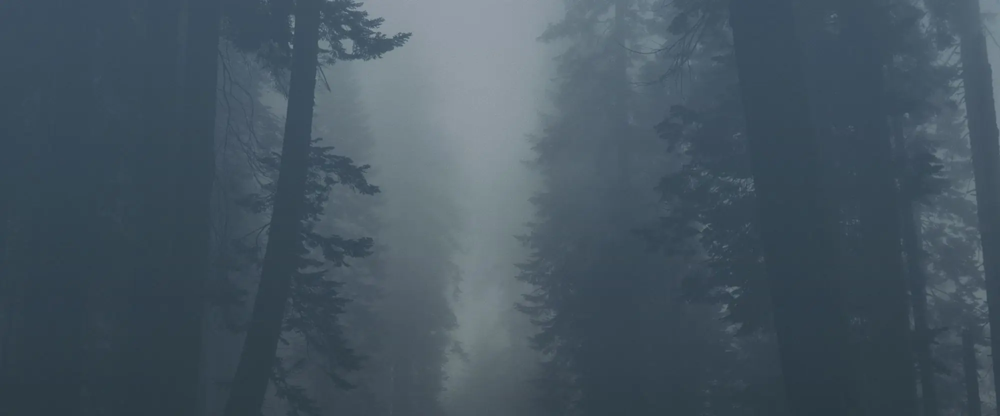

Artists I enjoy
These are similar artists you might like.
Nils Frahm
Climactic song structures, emotional builds, and interesting textures.
nilsfrahm.comJackie Baker
Beautiful prayer music, good for intercession and quiet time.
Jackie Baker on YouTubeChords of Orion
Beautiful, guitar-driven ambient, good for calming anxiety.
chordsoforion.com

Know someone who needs this?
Share the music.
Listen on Bandcamp